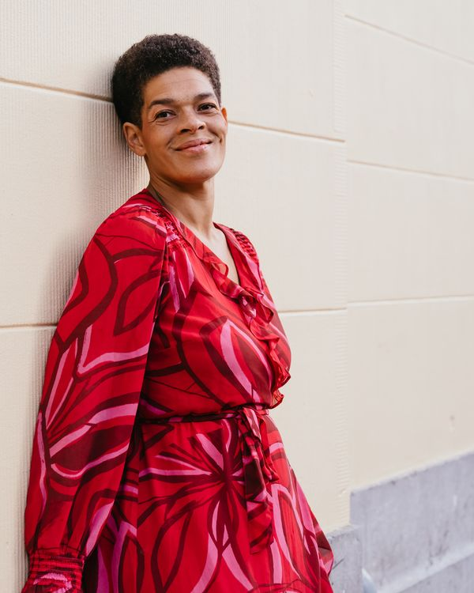

Scheiding · co-ouderschap · Veilig Thuis · relaties
Bel Pearl
maar even.
Een scheiding, gedoe rond co-ouderschap, een melding bij Veilig Thuis, twijfels over je relatie — soms wil je niet eerst een heel traject in, maar gewoon één verhelderend gesprek. Kies je moment, plan direct in en bel binnen een paar dagen met Pearl.
Waarom Belpearl
Niet elk vastlopen vraagt om een heel traject.
Je hoeft niet met alles te wachten tot je hebt uitgezocht bij wie je moet zijn. Soms heb je gewoon iemand nodig die meeluistert, meedenkt en je op weg helpt — snel, persoonlijk en zonder lange wachtlijst. Door de vragen die ik stel, breng je zelf je gedachten op orde, zodat je weer helder ziet wat je volgende stap kan zijn.
Belpearl is er voor dat ene moment waarop je vastloopt en zelf weer een volgende stap wilt zetten.
Hoe het werkt
Drie stappen naar helderheid
Kies je moment
20, 35 of 55 minuten — jij bepaalt hoeveel ruimte je nodig hebt.
Plan direct in
Boek zelf een tijdstip via de agenda en betaal meteen veilig via iDEAL.
Bel met Pearl
Na betaling ontvang je het telefoonnummer waarop je gebeld wordt — rechtstreeks, persoonlijk, geen wachtrij.
De drie consults
Kies het gesprek dat bij je situatie past
Snel antwoord op één vraag
Voor als je één concrete vraag hebt en snel duidelijkheid wilt. Bijvoorbeeld over een eerste stap na een scheiding, hoe je iets rond co-ouderschap aanpakt, of wat je moet doen bij een melding van Veilig Thuis.
- Eén specifieke vraag
- Een korte check: "klopt wat ik denk?"
- Een eerste duw in de goede richting
"Fijn dat er zo snel iemand met je mee kan denken. Ik kon de volgende dag al een afspraak inplannen. Dat is in mijn ogen goud waard."
NovaJe situatie in kaart brengen
Voor als je situatie iets meer om het lijf heeft en je behoefte hebt aan overzicht. Jij vertelt, ik luister, vraag door en vat samen — zo orden je zelf je gedachten en zie je weer helder wat je volgende stap kan zijn.
- Een situatie met meerdere kanten
- Overzicht krijgen voordat je een beslissing neemt
- Ruimte om je verhaal te doen en gericht advies te krijgen
"Ze wees ons erop dat we elkaar nog steeds behandelden als partners in plaats van samen opvoedende ouders. Dat maakte het veel makkelijker om dingen van elkaar te accepteren."
AzizUitgebreide bespreking van je situatie
Voor als je situatie complex is of je echt de tijd wilt nemen om alles door te spreken. We werken toe naar een duidelijk beeld van waar je staat en wat je te doen staat — ik stel de vragen die niemand durft te stellen.
- Een situatie met veel factoren of geschiedenis
- Grondig advies over een lastige keuze
- Alle ruimte om je verhaal volledig te doen
"Doordat Pearl scherpe vragen stelde werd me snel duidelijk dat mijn advocaat niet bij me paste. Dat bracht helderheid, waardoor ik weer verder kon op de goede weg."
RobertTwijfel je welk consult bij je past? Begin gerust met het 20 min consult — merk je dat je meer tijd nodig hebt, dan plan je alsnog een langer gesprek. Liever niet bellen? Het gesprek kan ook via e-mail of spraakbericht.
Blijven of Gaan, de Scheidingscheck
Wil je dieper gaan dan één gesprek? Blijven of Gaan begint bij een uitgebreide vragenlijst — bijna 100 vragen over wat er in jouw afweging meespeelt — gevolgd door een eenmalige call van 55 minuten waarin we samen door je antwoorden heen gaan. Voor wie echt tot de kern wil komen van de vraag: blijven of gaan.
Bekijk Blijven of Gaan
mediator & familietherapeut
Over mij
Hallo, ik ben Pearl
Als mediator, haptonoom, familietherapeut, ouder en als mens help ik mensen die vastlopen in situaties rond scheiding, co-ouderschap, relaties of een melding bij Veilig Thuis. Niet met een lang traject, maar met een verhelderend gesprek waarin je snel weer verder kunt.
Ik luister en kijk met je mee — met de scherpte van iemand die afstand houdt en professioneel is, maar met de warmte en betrokkenheid alsof ik je zus ben. Als vakspeler weet ik wat er speelt in dit soort situaties, en help ik je zelf de antwoorden te vinden waar je nu niet uitkomt.
"Pearl is zeer prettig om mee te bellen. Deskundig, niet bang om te zeggen waar het op staat. Ze zei precies wat ik niet wilde horen, maar dat was wel wat ik nodig had."
Muriel"Bel Pearl maar even" — die zin hoor ik vaak, en dat is precies wat ik wil zijn: iemand die je snel en persoonlijk kunt bereiken, op het moment dat je het nodig hebt.
Wat anderen zeggen
Berichtjes van eerdere gesprekken
"Pearl is zeer prettig om mee te bellen. Deskundig, niet bang om te zeggen waar het op staat. Ze zei precies wat ik niet wilde horen, maar dat was wel wat ik nodig had."
Muriel"Ik was verbaasd over haar scherpte en betrokkenheid. Ze legde linken die we zelf niet hadden gelegd."
Aziz"Ik wilde mijn gedachten ordenen over mijn scheiding. Ik kon de volgende dag al een afspraak inplannen. Dat is in mijn ogen goud waard."
Nova"Doordat Pearl scherpe vragen stelde werd me snel duidelijk dat mijn advocaat niet bij me paste. Dat bracht helderheid."
RobertWaar je op kunt rekenen
Duidelijk, vooraf, zonder verrassingen
- Vertrouwelijk en zonder oordeel
- Zelf direct een moment inplannen, geen heen-en-weer gemail
- Veilig betalen via iDEAL, vooraf geregeld
- Praktisch advies waar jij zelf mee verder kunt
- Geen lang traject — je kiest zelf wat je nodig hebt
- Gesprek per telefoon, e-mail of spraakbericht
Wanneer bel je beter niet
Belpearl is bedoeld voor een kort, verhelderend gesprek — niet voor acute noodsituaties.
- Is er direct gevaar? Bel 112.
- Zoek je een langdurig therapie- of mediationtraject? Dat bespreken we graag tijdens een consult, maar Belpearl vervangt zo'n traject niet.
- Heb je acute juridische bijstand nodig? Daarvoor verwijs ik je door naar een advocaat binnen mijn netwerk.
- Zoek je alleen een luisterend oor om te ventileren of te klagen? Belpearl werkt het beste als je zelf met eigenaarschap en de wil om verder te komen aan het gesprek begint.
Veelgestelde vragen
Nog iets onduidelijk?
Hoe werkt het boeken van een consult?+
Je kiest een consult (20, 35 of 55 minuten), plant zelf een moment in via de agenda en betaalt vooraf veilig via iDEAL. Zodra je hebt geboekt en betaald, is je plek bevestigd en ontvang je het telefoonnummer waarop je gebeld wordt.
Kan ik ook dezelfde dag nog een consult inplannen?+
Ja, dat kan. Voor een consult op dezelfde dag geldt een spoedtoeslag van €20 bovenop het basistarief.
Moet ik per se bellen, of kan het ook anders?+
Bellen is de standaard, maar als je liever niet belt kan het gesprek ook via e-mail of spraakbericht.
Welk consult past bij mij?+
Twijfel je? Begin gerust met het 20 min consult. Merk je tijdens of na het gesprek dat je meer tijd nodig hebt, dan kun je altijd een langer consult inplannen.
Is een consult vertrouwelijk?+
Ja. Wat je met mij bespreekt, blijft tussen ons.
Ga je mijn zaak juridisch behandelen?+
Ik ben juridisch onderlegd en denk vanuit die kennis met je mee, maar ik neem geen juridische procedures over. Waar dat nodig is, verwijs ik je door binnen mijn grote, warme netwerk — zodat ik je zeker weet te koppelen aan de juiste persoon voor jouw situatie.
Kan ik een consult annuleren of verzetten?+
Een consult verzetten kan de eerste keer altijd kosteloos. Bij annulering vindt geen restitutie plaats.
Kan ik een consult boeken over een melding bij Veilig Thuis?+
Ja. Dit is een van de onderwerpen waar je bij Belpearl terecht kunt, bijvoorbeeld met vragen over wat een melding voor jou betekent of wat je te doen staat.
Is dit hetzelfde als therapie of een mediationtraject?+
Nee. Belpearl is bedoeld voor een kort, gericht gesprek — geen langdurig traject. Past jouw situatie beter bij een uitgebreider traject, dan bespreken we dat samen tijdens het consult.
Kan ik Belpearl bellen in een noodsituatie?+
Nee, Belpearl is niet bedoeld voor acute noodsituaties. Bij direct gevaar bel je 112.